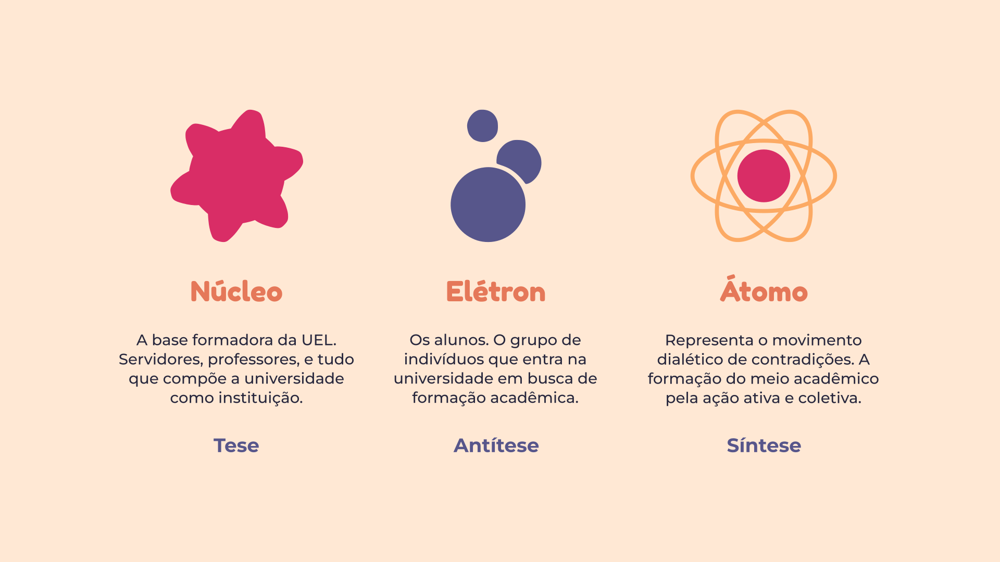

Vestibular UEL 2024
Alternativa de cartaz e identidade visual para o vestibular de 2024 da Universidade Estadual de Londrina.
Detalhes do Projeto
O desenvolvimento do cartaz do vestibular é uma tradição no curso de Design Gráfico na Universidade Estadual de Londrina. Os alunos — divididos em grupos — apresentam suas propostas de cartaz, com conceitos desenvolvidos durante o semestre. Além do próprio cartaz, o projeto também engloba a produção de uma variedade de materiais gráficos, como panfletos e templates para uso nas redes sociais da universidade.
Através da metáfora visual do átomo, buscamos representar a construção da universidade como um processo dialético — um todo formado e transformado pela interação de seus componentes, uma translação de contradições que forma a realidade. A instituição é colocada na posição de infraestrutura material, e o estudante é colocado como protagonista na formação e direcionamento da superestrutura, produzindo uma sociedade mais plural, diversa e democrática. O grafite e a estética urbana foram utilizados como inspiração estética, representando os contrastes entre a academia e a realidade popular, buscando dialogar com as tendências contemporâneas da juventude.
Galeria do Projeto

